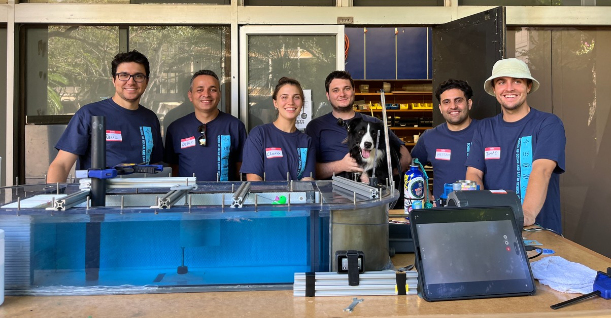

Principal investigator
E. Deniz Gedikli
Associate Professor · Ocean and Resources Engineering
Fluid–structure interactions, nonlinear dynamics, marine renewable energy, and Arctic engineering.
FSI–NLD Laboratory
The researchers and students behind our work in fluid–structure interactions, marine energy, and ocean engineering.
Fluid–Structure Interactions and Nonlinear Dynamics
University of Hawaiʻi at Mānoa

1 postdoc · 5 Ph.D. students · 1 M.S. student
Principal investigator
Associate Professor · Ocean and Resources Engineering
Fluid–structure interactions, nonlinear dynamics, marine renewable energy, and Arctic engineering.
Postdoctoral researcher
Current postdoc · Joined summer 2023
Two-way coupled fluid–structure interaction simulations and finite-element analysis, with contributions to experimental studies and graduate research.
Ph.D. student
Ocean and Resources Engineering
Dynamics of flexible structures under harsh environmental conditions.
Ph.D. student
Ocean and Resources Engineering
Vortex-induced vibrations and control strategies for marine renewable energy devices.
Experimental investigation of thin-walled cylindrical cantilever beams undergoing vortex-induced vibrations.
Ph.D. student · Co-advised
Civil and Environmental Engineering
Impacts of rapid climate change on Arctic, island, and coastal communities.
Main advisor: Oceana Francis. Co-advisor: E. Deniz Gedikli.
Ph.D. student
Ocean and Resources Engineering
Data-driven decision support for ship and fishing activities in harsh marine environments.
Ph.D. student
Ocean and Resources Engineering
Numerical simulation of flexible fluid–structure interactions.
M.S. student
Ocean and Resources Engineering
Control of vortex-induced vibrations using piezoelectric transducers.
Completed M.S. degrees · Theses & Plan B projects
ThesisFeasibility of a wave-powered lithium extraction system
Plan B projectEvaluating Stability and Structural Integrity of a Modified Cargo Ship
Plan B projectExperimental determination of damping characteristics for modeling improvement of a floating oscillating surge wave energy converter
ThesisExperimental investigation of thin-walled cylindrical cantilever beams undergoing vortex-induced vibrations
ThesisFluid-structure interaction analysis of an oscillating wave surge energy converter using LS-Dyna
Former visiting postdoc
January–December 2024
Finite-element modeling and experimental methods for fluid–structure interactions, including hydrodynamic loading and support for graduate laboratory research.
Former postdoc
Research focus
Analysis of vortex-induced vibration and ice–structure interaction data, with work on data-driven modeling and nonlinear dynamics.
Summer research · NHSEMP
Undergraduate researcher
Summer 2024 · NHSEMP
Energy dissipation by different wave-breaker shapes for coastal protection, using 3D-printed prototypes and wave-flume experiments.
Main advisor: E. Deniz Gedikli. Day-to-day mentor: Ozgur Demir.
Undergraduate researcher
Summer 2023 · NHSEMP
Floating photovoltaic applications in the ocean, including materials testing in the wave flume.
Main advisor: E. Deniz Gedikli. Day-to-day mentor: Jonas Behnen.
Work with us
For graduate or undergraduate research enquiries, send a short introduction describing your background and research interests. Please mention the questions you would like to explore with our group.